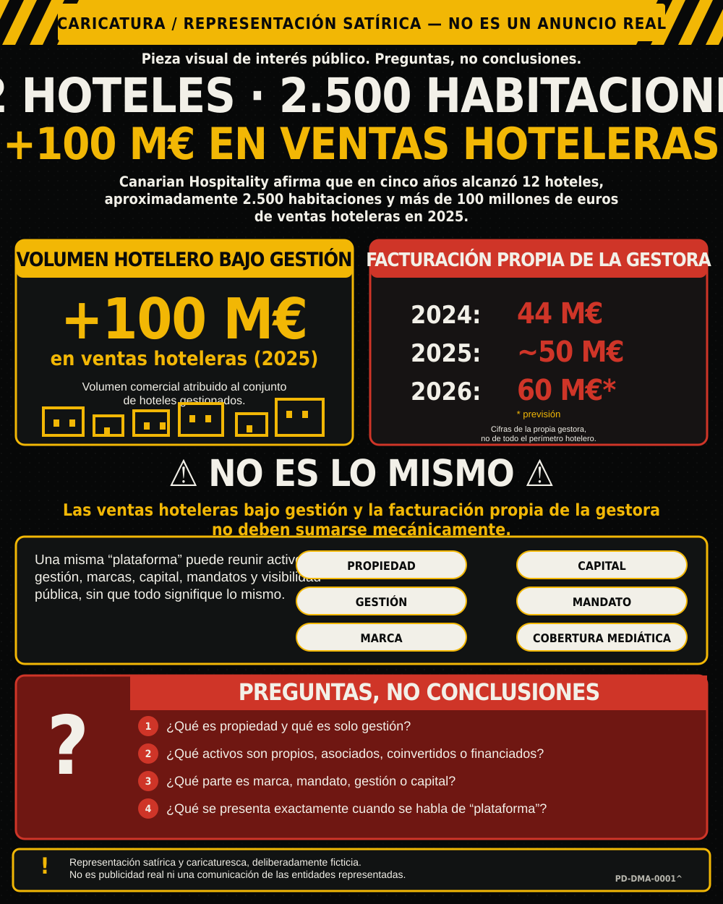
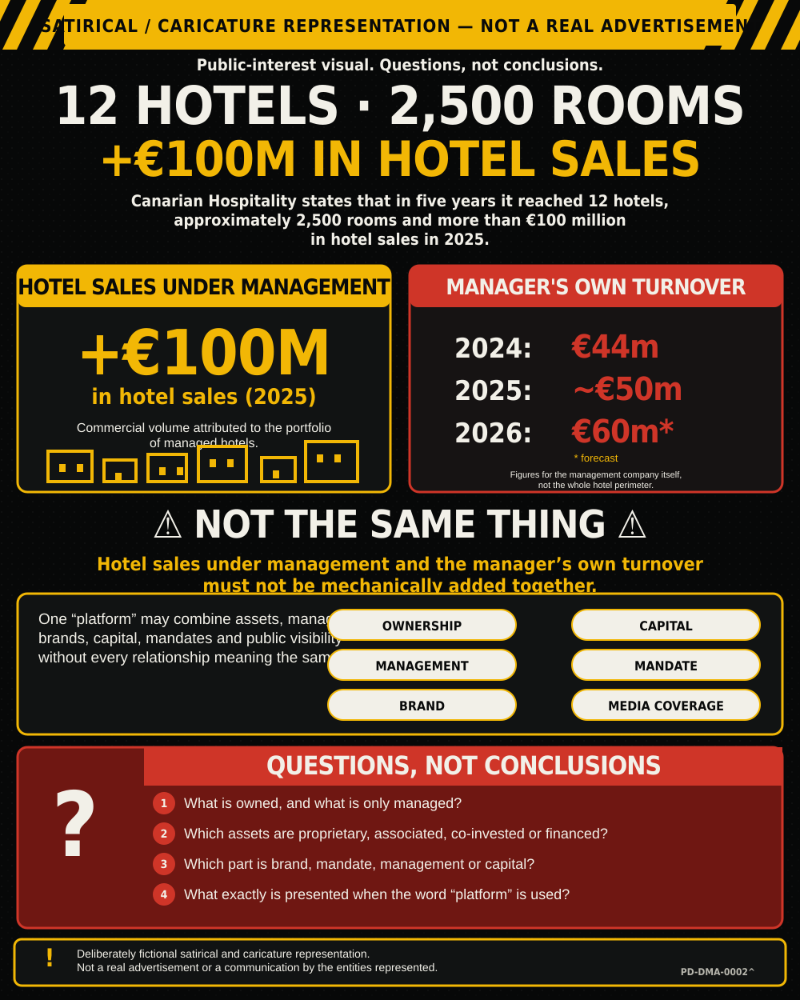
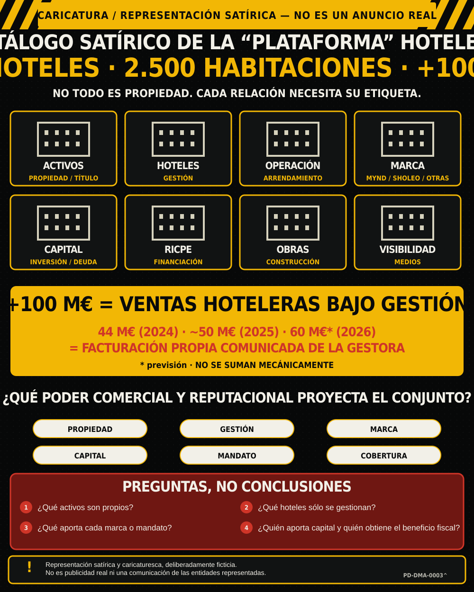
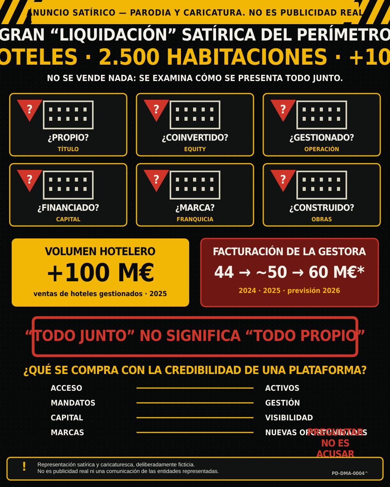

Principal ES · público
PD-DMA-0001

Web: PD-DMA-0001^ · SVG · 10.401 bytes.
SHA-256 f0b301793227e217a0c594331291096de747592ee8748eaebc0778d1522f422b
PNG difusión: PD-DMA-0001-PNG^ · 1122×1402 · 2.229.301 bytes.
SHA-256 3958fcd906b53c43f25f469573734cb3cf6851f6b92e9bf116557a094aa3d881
Principal EN · público
PD-DMA-0002

Web: PD-DMA-0002^ · SVG · 10.334 bytes.
SHA-256 70ae7fcd9797c3f769553712416a7c1c034dad7457513dd12fefb847771abb49
PNG difusión: PD-DMA-0002-PNG^ · 1200×1500 · 239.753 bytes.
SHA-256 b0616f945d145080ad3053f5e5c08f3f1b7620d10e8ec24547043c895a6e039f
Variante corregida · estilo 1
PD-DMA-0003

Web: PD-DMA-0003^ · SVG · 13.773 bytes.
SHA-256 6f2bcb6ed10b198871dcc60ea09e36b2a250b75d9959817d3e0191854f434f38
PNG difusión: PD-DMA-0003-PNG^ · 1200×1500 · 204.794 bytes.
SHA-256 1bd492c1858bc911d14bbd046c5bb501947d4076c91472cdfe3f655927da113b
Variante corregida · estilo 2
PD-DMA-0004

Web: PD-DMA-0004^ · SVG · 12.910 bytes.
SHA-256 204b048051026680fcbe68c764c4cfff9fe2569abf3ebfb73db2abec4996ad58
PNG difusión: PD-DMA-0004-PNG^ · 1200×1500 · 184.214 bytes.
SHA-256 125d1b0b07e6fffd8734e84017d9f0cc529f6a8ef6a534af2439c3cf74305c5f
Legacy · no publicar sin corregir
PD-DMA-LEGACY-0001-PNG^
Primer concepto de alto contraste. Identidad preservada, pero su roster heredado, retratos y aparentes relaciones de propiedad/rol no constituyen contenido factual aprobado.
SHA-256 f62c18c633fd9a3ce48944cefa3e7a4c74dbf4a388bae64e5064505049e73e33
Legacy · no publicar sin corregir
PD-DMA-LEGACY-0002-PNG^
Segundo concepto tipo cartel turístico. Puede conservarse como referencia creativa, no como ficha de evidencia.
SHA-256 09da584fc4437d55c732191488d6054d8039ea86a81255577b81cbc12e6393aa